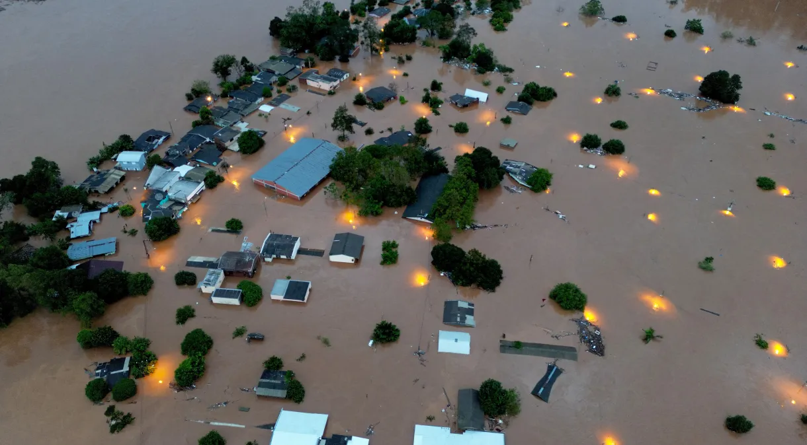
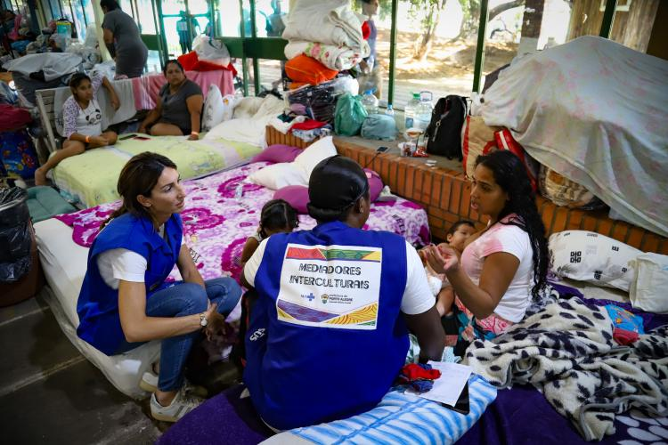
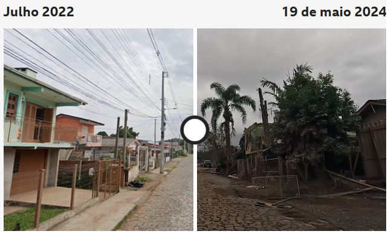
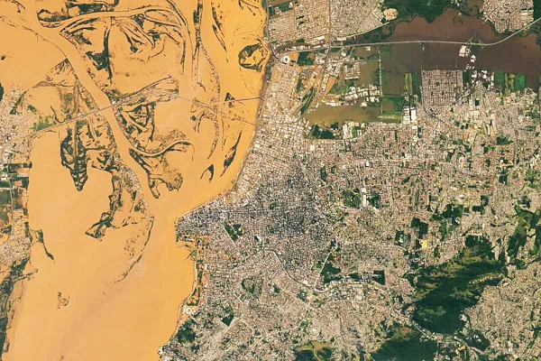

As chuvas do final de semana estão provocando reflexos no Lago Guaíba nesta segunda-feira (13). Desde a meia-noite, o rio já subiu 22 centímetros, passando de 4,64m para 4,86m: uma média de 2,2 centímetros por hora
Projeções feitas pela Defesa Civil, pelo governo do estado e por especialistas da Universidade Federal do Rio Grande do Sul, apontam que o nível do rio pode chegar entre 5,5 e 5,6 metros, superando a marca de 5,33 metros desta mesma chuva. O recorde foi registrado na segunda-feira da semana passada, dia 6 de maio, às 20h. (Fonte CNN)
As cheias no Guaíba são consequência do escoamento da água do interior do estado. Na serra gaúcha, o final de semana foi marcado por chuvas nos locais onde estão os rios dos Sinos, Caí, Gravataí, Jacuí e Taquari.
Moradores da cidade de Caxias do Sul, na Serra Gaúcha, relataram tremores de terra na madrugada desta segunda-feira (13) em meio às fortes chuvas e enchentes que atingem o Rio Grande do Sul. O Corpo de Bombeiros da região informou que está verificando os relatos e orientou que os moradores deixem imediatamente suas casas em caso do aparecimento de rachaduras.
Segundo o Observatório de Sismologia da Universidade de Brasília (UNB), houve três tremores na Serra Gaúcha. O primeiro, de 2,4 graus, à 01h48 foi registrado em Bento Gonçalves; o segundo, às 2h58, em Caxias do Sul, de 2,3 graus; e o terceiro às 3h03, com a mesma intensidade, em Caxias
Segundo o relatório da CNM-Confederação Nacional de Municípios, 1.408.993 pessoas foram afetadas em 397 municípios. Já são 156.056 desalojados e 48.297 em abrigos
A cidade de Porto Alegre deve voltar ao seu estágio normal pós-inundações apenas no mês de junho. A estimativa é do diretor geral do Departamento Municipal de Água e Esgotos, Maurício Loss. Em entrevista à CNN, Loss disse que está retomando a atividade das casas de bombas desligadas, mas que a previsão de chuva deve afetar os trabalhos. O nível do lago Guaíba chegou no domingo (19) a 4,43 metros, uma queda em relação à marca histórica atingida na semana passada. Apesar dessa redução, o lago continua 1,43 metro acima da cota de inundação, que é de 3 metros.
O governo do Rio Grande do Sul está mobilizado para construir “cidades provisórias” em Porto Alegre, Canoas, São Leopoldo e Guaíba, quatro municípios que concentram mais de 65% da população atualmente desabrigada.
Muitas instituições conceituadas têm se movimentado para enviar auxílio às vítimas do RS. Os itens mais imediatos têm sido água potável, itens de higiene e limpeza, roupas, agasalhos, medicamentos, colchões, roupas de cama, toalhas e alimentos.
Recursos financeiros também estão sendo viabilizados para necessidades básicas do momento emergencial, e também para o porvir, quando a recuperação e restauração das cidades e estradas for possível.
Água é item básico para a sobrevivência e muitas localidades e abrigos estão totalmente sem água, apesar das muitas águas que têm causado essa tragédia. Nossa organização não poderia deixar de agir em favor do Rio Grande do Sul nesse momento.
E precisamos, como empresas e instituições, pensar estrategicamente sobre como ajudar sem causar um impacto negativo ainda maior, ou sermos peso. Os esforços reunidos com parceiros que agregam nesse ponto e têm acesso à região serão mais efetivos.
Pessoas prejudicadas pela enchente e pelas chuvas no Rio Grande do Sul que precisam de atendimento de saúde agora têm a opção de consultas on-line. Em parceria com a Prefeitura de Porto Alegre, o Grupo DOC disponibiliza consultas virtuais gratuitas para toda a população atingida pelas cheias.
Conforme o titular da pasta, Fernando Ritter, toda ajuda é bem-vinda neste momento para melhorar o acesso à saúde de um maior número de pessoas. “Com o acesso facilitado, podemos reduzir a busca por emergências em hospitais e prontos-atendimentos, deixando a saúde mais perto da população”, avalia.
Profissionais da Secretaria Municipal de Saúde (SMS) também atuam no atendimento às pessoas nos abrigos organizados em razão da enchente. Na Região Norte de Porto Alegre, bastante afetada pelas cheias, mais de 20 trabalhadores, entre médicos, enfermeiros, dentistas, técnicos de enfermagem, farmacêuticos e agentes de saúde, atuam desde a manhã de sábado, 4, junto aos desabrigados que estão no Vida Centro Humanístico.
Para dar conta de questões de saúde mental, a equipe é composta ainda por psicólogos, psiquiatras e terapeuta ocupacional, além de manter o acesso a vacinas e medicamentos. De acordo com dados da Defesa Civil, na manhã do dia 10, a Prefeitura de Porto Alegre registrou 13.175 pessoas em abrigos temporários organizados pelo município e por entidades parceiras. Ao todo, 144 estruturas foram montadas para assistência à população atingida pelas enchentes .
Um grande volume de chuva previsto pelo menos desde segunda-feira (20/5) trouxe de volta às ruas de Porto Alegre uma cena comum nos piores dias da catástrofe ambiental que se abate sobre o Rio Grande do Sul: caminhões e barcos retirando pessoas de pontos isolados pela água.
A precipitação, que começou na madrugada de quinta (23/5) e deve prosseguir durante a sexta- (24/5), atingiu em apenas 12 horas a marca de 100 milímetros, equivalente à média histórica de todo o mês de maio, segundo o serviço meteorológico MetSul.
Em pontos das zonas leste e sul, relativamente poupadas na primeira fase da enchente, a chuva chegou a 130 mm no mesmo intervalo, conforme o Instituto Nacional de Meteorologia (Inmet)
A reportagem da BBC News Brasil circulou pelas zonas leste, norte e central da capital ao longo do dia e testemunhou diversos pontos de alagamento em vias como as avenidas Ipiranga, Bento Gonçalves, Goethe, Silva Só e outras.
O município de Estrela, no Vale do Taquari, interior do Rio Grande do Sul, foi um dos mais afetados pelas recentes enchentes no Estado. Segundo a prefeitura, no auge das inundações, 75% do território da cidade ficou submerso.
A reportagem da BBC foi ao bairro de Moinhos, que foi devastado pela tragédia, conversar com moradores e entender como ficará a região que foi destruída pela lama
De acordo com a prefeitura, o bairro não receberá mais infraestrutura de água, energia elétrica, esgoto e equipamentos públicos como postos de saúde e escolas. A medida atende a uma recomendação do Ministério Público do Estado do Rio Grande do Sul.
A ideia é desestimular o retorno a essas áreas. Na prática, o local poderá se transformar em um "bairro fantasma".
A DESTRUIÇÃO CAUSADAS PELAS CHUVAS EM ESTRELA [RS]
As inundações que atingiram o Rio Grande do Sul desde o final de abril levaram à morte de pelo menos 165 pessoas e deixaram 581 mil pessoas desalojadas. Desse total, 55 mil estavam em abrigos improvisados até a manhã de sábado (25/5)
Estrela, município de 34 mil habitantes, fica na região conhecida como Vale do Taquari, uma das mais afetadas. Segundo a Prefeitura do município, no auge das inundações, 75% do território da cidade ficou submerso.
Nos primeiros dias da tragédia, o município chegou a ter 6 mil pessoas em abrigos. Com o baixar dos rios, algumas foram voltando para casa ou se abrigam em casas de familiares. Agora, segundo a prefeitura, há 600 pessoas em abrigos.
As enchentes no Rio Grande do Sul foram causadas por fortes chuvas que começaram a atingir o estado no final do mês de abril de 2024, prolongando-se até maio
enchentes no Rio Grande do Sul causadas por fortes chuvas que começaram a atingir o estado no final do mês de abril de 2024, prolongando-se até maio. Por conta disso, vários cursos d’água e o lago Guaíba tiveram seus níveis aumentados para além da cota de inundação, extravasando para as áreas adjacentes, o que inclui os municípios por eles abastecidos. 441 cidades foram atingidas, o que representa 95% dos municípios sul-rio-grandenses. Milhões de pessoas foram afetadas, com 600 mil desabrigados e 179 mortes, além de dezenas de desaparecidos.